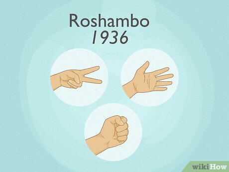
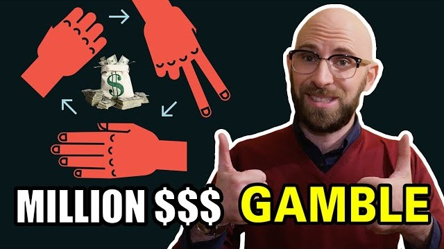
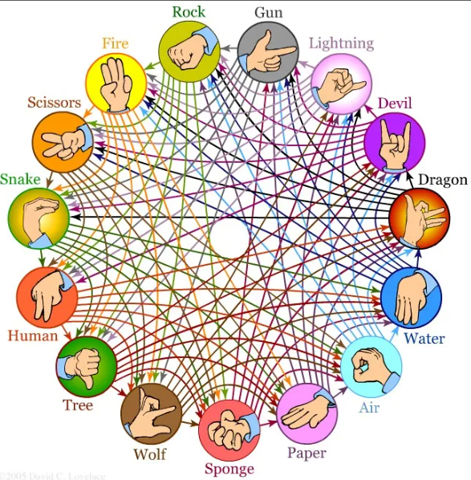
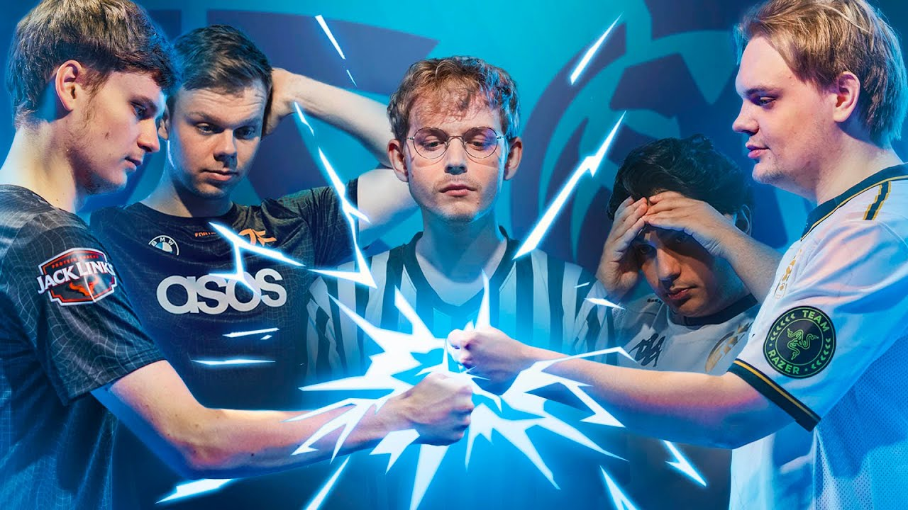
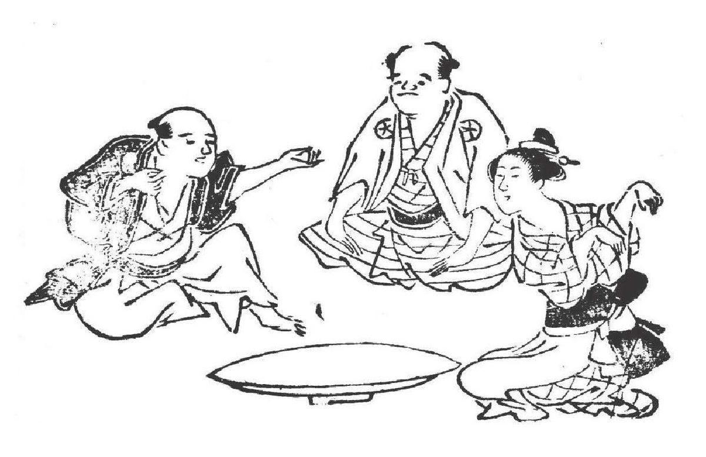
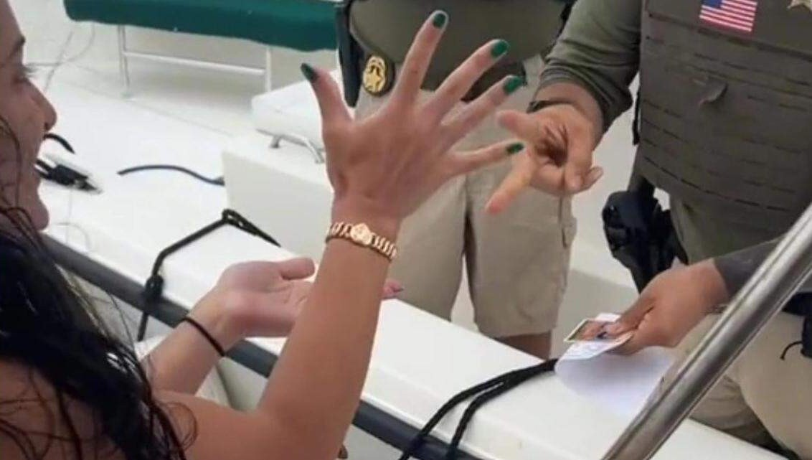
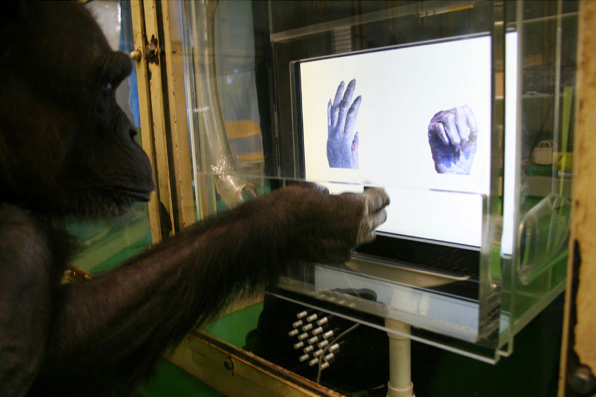

10 fun facts about "Rock Paper Scissors"
1. A Game by Any Other Name
Another name for Rock Paper Scissors, Roshambo, is most commonly used in Northern California. But no one knows where the word Roshambo came from. Many believe it’s of French origin and connected to the Comte de Rochambeau—a French nobleman in the American Revolutionary War who was featured in the musical Hamilton. Though legend suggests he played the game, evidence suggests it was not yet known in America at this time.The first written use of the term Roshambo is found in “The Handbook for Recreational Leaders,” published in Oakland, California. The words don’t seem to mean anything in any language, and we can only guess their origin. Many believe that the name may be an Americanized interpretation of “Jon Ken Pon,” the Japanese name for the game. A high East Asian population in that part of the United States may have made children there familiar with the Japanese name. The heavy level of Revolutionary history taught in schools may have led to Rochambeau also being a familiar sound. Somehow, they became entangled, creating a new word for Rock Paper Scissors in this region. At least, that’s the best theory anyone has.
2. By Order of the Judge
When two lawyers were having a minor quibble about where the deposition of a witness should take place, Judge Gregory Presnell eventually could not take it anymore. He ordered that they “engage in one game of rock, paper, scissors.” He chose the site as the steps of the Tampa federal courthouse to avoid yet another disagreement over where the game should be held.Ridiculous as it sounds, the game was due to be overseen by Matti Leshem, co-commissioner of the USA Rock Paper Scissors League. He thought that both lawyers would go for paper “because they deal with so much paper.” Unfortunately, the attorneys decided to settle the matter by other means rather than face the battle. But it did set an odd precedent for conflicts to be possibly resolved by children’s games.

3. A Multi-Million Dollar Art Deal
Sotheby’s and Christie’s form a duopoly in the auctioneering world, vying against each other for control over the biggest art auctions. When the electronics company Maspro Denkoh Corporation decided to sell off a collection of its artwork, the deal was worth about 20 million dollars. However, company president Takashi Hashiyama made the unusual decision to grant control to whichever company won a game of Rock Paper Scissors. He simply stated: “I believe this is the best way to decide between two things which are equally good.”Christie’s president took the decision seriously and tried to learn the psychology of the game. She ended up taking the advice of 11-year-old twins Alice and Flora Maclean, daughters of the international director of Christie’s Impressionist and modern art department. They suggested scissors, as “rock is way too obvious, and scissors beats paper.” When asked what to do if the other side played scissors, too, they simply said play scissors again because they expected the other side would move to paper.Sotheby’s did not plan any strategy as they believed the game would come down to pure chance. In the room, both parties were asked to write their choices down rather than throw gestures. As the twins suspected, Sotheby’s went for paper, and Christie’s won the deal by sticking with scissors. Later that year, Time magazine’s “quotes of the week” section featured Alice MacLean alongside a future Pope and Bill Clinton, with these words of wisdom: “Everybody knows you always start with scissors.
4. It Isn’t as Random as You Think
A group of Chinese universities carried out extensive research into the game and its relation to human decision-making. They were able to come up with some useful tactics. We tend to stick with decisions that have done well for us and move away from ones that have not. Therefore, in multiple rounds, the best strategy is to play based on the other player’s last move. If they have just won, switch to whatever would beat their previous move. If they lose, they are more likely to switch. You should throw the shape that would have lost to their previous move. The authors refer to this as the “win-stay, lose-shift” strategy.Other things that may help are that both men and newbies are more likely to throw rock, and paper is a slightly less common choice than the other two. Although Rock Paper Scissors seems akin to a coin toss, people’s predictability and suggestibility can make it rely less on chance if you can accurately predict your opponent’s behavior. Of course, all this only works if you are playing against someone who has never heard of this research. If they have, you will find yourself in a more challenging battle of wits.

5. Koreans Play Upgraded Versions
The game is popular in Korea, and they have developed some excellent new editions. A game called muk-zzi-ppa (묵찌빠) uses traditional Rock Paper Scissors as just the starting point. This “regular match” decides who is attacking first in muk-zzi-ppa. The attacker must then try to get the other player to match the symbol they shout out and display. If they win, they attack again, but if they lose, the other player becomes the attacker, and if they match, the attacker wins the whole game.Another variant, hana ppaegi (subtract one), involves chanting a rhyme before holding out two symbols. Each player then chooses one of those two to put forward and plays to beat their opponent. The Philippines also has a version called jak-en-poy that utilizes a rhyme. A four-line song is recited with a game played at the end of each line. The winner is whoever scores the most victories throughout. The game can also use different symbols, with scissors replaced by a bird (made by bringing five fingers of one hand together into a beak). This beats water by drinking it and is beaten by stone. Water beats stone by erosion. Which all makes at least a little more sense than paper beating stone.
6. They Have Tournaments
In 1995 with the internet on the rise, brothers Doug and Gary Walker got the idea to start a website. They just weren’t sure what to start a website about. But they enjoyed playing Rock Paper Scissors in their garage while shouting trash-talk at each other, so that seemed like an obvious enough topic. They created false traditions and lore for the site and accidentally created a unique viral sensation. Essentially, it was begun as a joke.Over the next decade, the popularity soared, culminating in the World Rock Paper Scissors Championships. This was sponsored by Microsoft and Yahoo! with a cash prize of $10,000 for the winner. People would arrive with wild costumes and bizarre nicknames to create an involved culture around a nostalgic game.Though nobody ever won more than once, there was a decided gradation of skill. Although the popularity has waned today, Doug and Gary Walker are still considered experts in the field, and the website wrpsa.com is still devoted to telling fans about the game and promoting competitions.
7. The Game Is Ancient
The first mention of this type of game dates back to the Han dynasty (206 BC–AD 220) in China and featured a frog, caterpillar, and snake. Throughout Japanese history, there are frequent references to a game called sansukumi-ken, meaning the three who are afraid of one another.It is believed that the game originated in China and then spread through Japan. In the Japanese version, a mistranslation put the game as frog, slug, and snake. Throughout time this transformed into Jan-ken, which uses the signs we know today. It isn’t clear exactly how it came to be played in the U.S., but it seems to be known in the country by the early 20th century. And the rules to “John Ken Pon,” as it was called then, were explained in a New York Times article in 1932
8. You Can Practice With a Robot
Human beings are notoriously bad at being random, even when they think they are. Afiniti can demonstrate machine learning to you by recognizing patterns in your play style and using them against you. It won’t win every game but will likely perform better than chance, especially as time goes on and it plays more rounds. You can try it out yourself on the Afiniti website.This computer learning system uses many of the techniques discussed in this list but can do so more accurately because it stores and analyzes a complete dataset of every choice you make. Even if you play attempting to be as random as possible, your knowledge of your previous choices will mean it is never truly random, and you will watch the percentage of wins slowly increase in Afiniti’s favor.
9. Rock Paper Scissors with the Police
Three police officers in Nook, Texas, were in trouble after giving an underage teen drinker a chance to get out of a citation if she beat them in Rock Paper Scissors. Unfortunately, the game and stakes were caught on camera, which then went viral. They had been hired to work security at an event called Chillfest but were banned from doing so again.Officers are given a choice to offer a citation based on their judgment. However, being at a festival, they were specifically instructed to stay in uniform and act professionally. And as Burleson County constable Dennis Gaas says, “Playing a game to see if a citation or warning is given does not fall under professional conduct.”
10. Chimps Can Play Rock Paper Scissors
We are not the only species capable of playing Rock Paper Scissors. Chimps can play the game on the same level as an average four-year-old. Studies at universities in Japan and China have found that all chimps can learn to this level, albeit slower than a human child. What takes the longest is learning the last pairing after learning everything else about the game. This indicates that it is the circular nature of the game that causes them the most trouble.However, the fact that they can eventually understand the circular reasoning behind the game’s rules gives scientists a deeper understanding of their intelligence. Those behind the study hope that it will inspire further research into this area.
